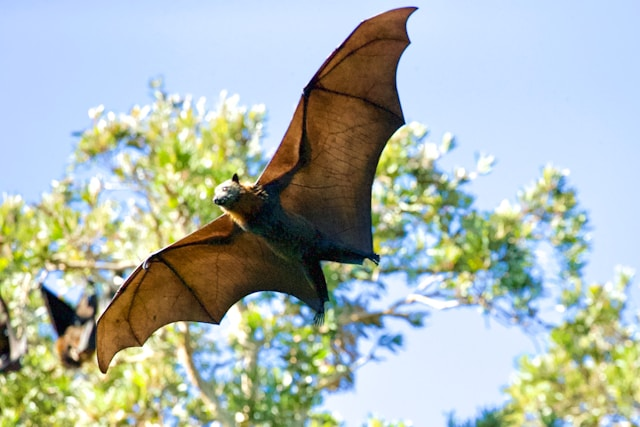

Scientists have discovered that some bats maintain long-term friendships and social relationships, much like humans.
Studies show that vampire bats are more likely to share food with bats that helped them in the past.
Researchers found that bats remember these relationships for years and often cooperate with trusted individuals.
When a bat fails to find food, another bat may regurgitate part of its meal to help its hungry friend survive.
This behavior suggests that bats form complex social networks based on trust, cooperation, and past experiences.
The discovery has changed how scientists view animal intelligence and social behavior.